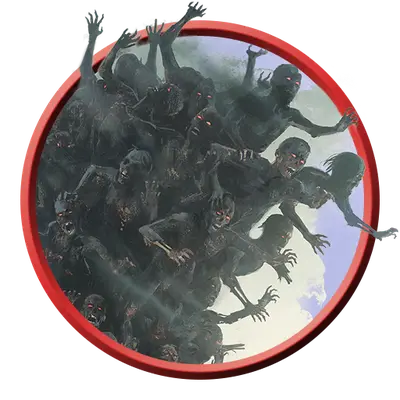

Кладбищенский ревенант
Graveyard Revenant
Огромная Нежить, Нейтральная

Класс Защиты 14 Инициатива +2 (12)
Хиты 161 (14к12 + 70)
Скорость 40 футов
| мод | спас | ||
|---|---|---|---|
| СИЛ | 20 | +5 | +8 |
| ЛОВ | 14 | +2 | +2 |
| ТЕЛ | 20 | +5 | +8 |
| мод | спас | ||
|---|---|---|---|
| ИНТ | 13 | +1 | +1 |
| МДР | 16 | +3 | +6 |
| ХАР | 18 | +4 | +7 |
Сопротивление урону Некротический, Психический
Иммунитеты Яд; Бессознательный, Испуганный, Истощение, Окаменевший, Отравленный, Очарованный, Ошеломлённый, Парализованный
Чувства Тёмное зрение 120 футов, пассивное Восприятие 13
Языки Общий
Опасность 7 (2 900 опыта; БВ +3)
Особенности
Восстановление нежити. Когда ревенант умирает, он возрождается спустя 24 часа, если только на его останки не сотворено Рассеивание зла и добра. Если он возрождается, он оживляет несколько других тел где-то на том же плане существования; с этих пор он выглядит по-другому, но использует ту же статистику и возвращается со всеми Хитами.
Действия
Мультиатака. Ревенант совершает две атаки Удушением.
Удушение. Бросок рукопашной атаки: +8, досягаемость 10 фт. Попадание: 10 (1к10 + 5) Дробящего урона плюс 10 (3к6) Некротического урона. Если цель Большого размера или меньше, она получает состояние Схваченный (Сл освобождения от захвата 15). Пока захват не прекращён, цель задыхается. Этим способом ревенант может удерживать Схваченными до двух целей одновременно.
Одержимый взор (Перезарядка 5–6). Спасбросок Мудрости: Сл 15, каждое существо в 30-футовой Эманации, исходящей от ревенанта. Провал: Цель получает состояние Парализованный и повторяет спасбросок в конце каждого своего хода, при успехе оканчивая на себе этот эффект. Через 1 минуту цель автоматически преуспеет в этом спасброске.
Бонус мастерства +3
Среда обитания Болота, Город, Леса
Сокровища Любые
Ревенанты
Возмездие с того света
Ревенанты — это мстительные духи, одержимые жаждой возмездия; они вселяются в трупы и другие физические оболочки, чтобы свершить правосудие — или чтобы выплеснуть ярость на тех, кто причинил им зло. Ревенанты не упокоятся, пока те, кого они желают покарать, не будут стёрты с лица мультивселенной. Если тело ревенантов уничтожено, ревенанты обретают новое и продолжают свой беспощадный поход.
Кладбищенские ревенанты подчиняют себе десятки тел, сливающихся в гротескные, бесформенные массы. Они мстят тем, кто повинен в массовых смертях, или целым организациям, бездушно губящим чужие жизни.